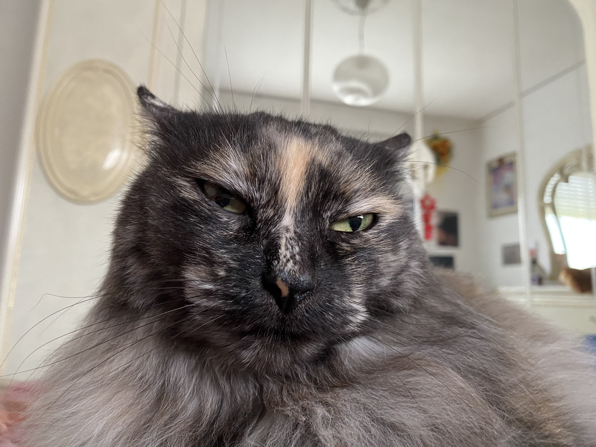

Salve a tutti, mi chiamo Nicole ho 19 anni, sono metà italiana e metà bosniaca. Abito in Friuli e amo i gatti.
I miei hobby sono principalmente quello di rompere le scatole alla mia gatta e mantenerla in forma , però come al solito senza successo.
Salve a tutti, mi chiamo Nicole ho 19 anni, sono metà italiana e metà bosniaca. Abito in Friuli e amo i gatti.
I miei hobby sono principalmente quello di rompere le scatole alla mia gatta e mantenerla in forma , però come al solito senza successo.
Da piccola mi spostavo molto per motivi di lavoro di mio papà , e di conseguenza ho girato un po' per l'Italia. Ho vissuto un po' alle Marche, Emilia Romagna fino in Lombardia.
| Esplorare nuove città; |
| Passeggiare a zonzo; |
| Passione per il Web; |
| Vacanze Natalizie/ Estive; |
| Cibo peruviano e bosniaco; |
| Refosco. |